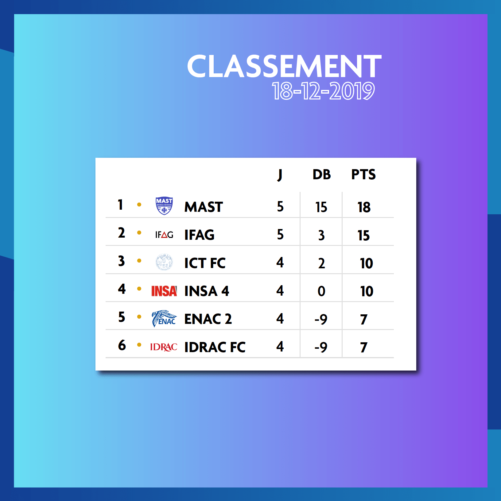
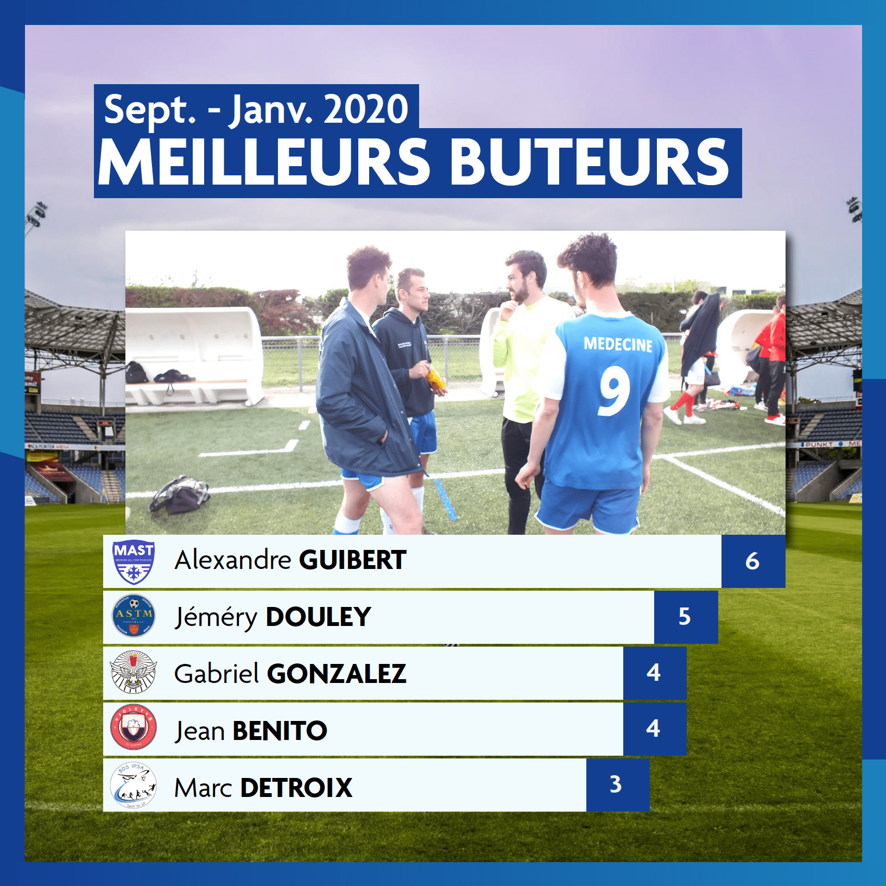
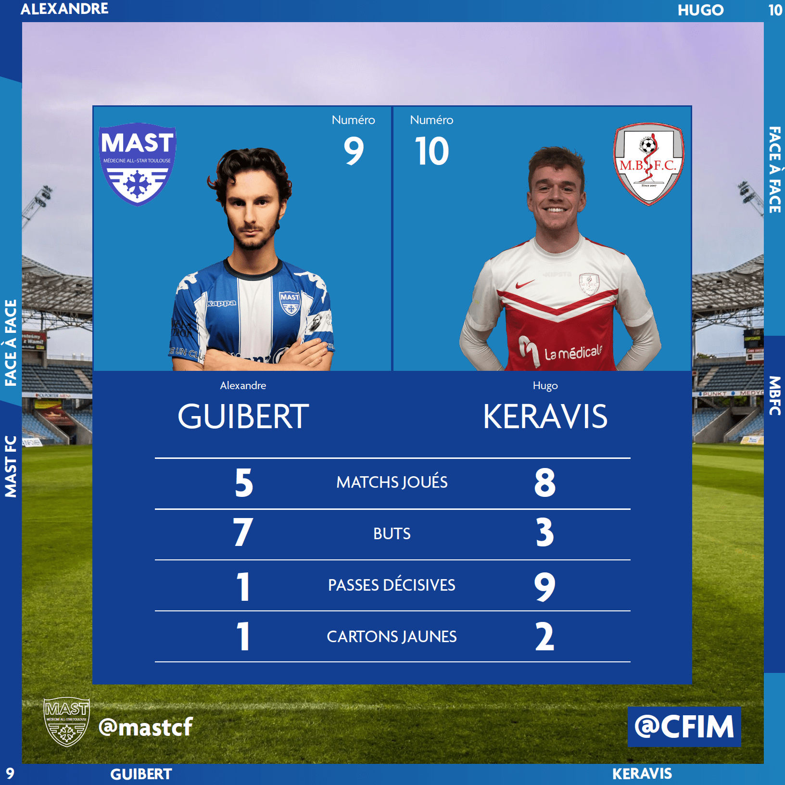
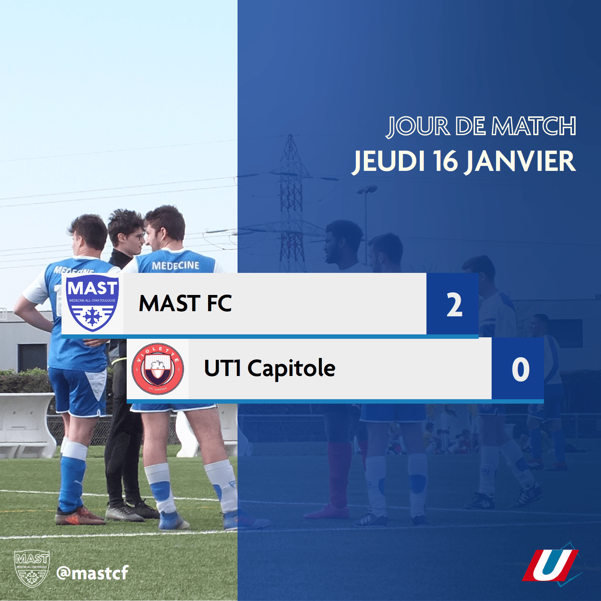

Bienvenue au MAST FC
MAST QUÉ UN CLUB
Qui sommes-nous
Le MAST : Médecine All Star Toulouse est le club de Football Universitaire réunissant les étudiants en Médecine des Facultés de Rangueil et de Purpan. Découvrez les dernières actualités des Carabins, plongez-vous dans leur quotidien et leurs performances (extra-) sportives.
Notre histoire
- Le club est fondé en 2012 par Basile Delpeche, ancien joueur, véritable légende des Carabins
- 4 équipes, 2 masculines, 2 féminines
- Palmarès : 1 demi-finale chez les filles, une finale chez les garçons
Au programme de cette année
- Entraînement le mardi soir de 18:00 à 20:00 au Stade Robert Barran
- Matches toutes les deux semaines de Septembre à Décembre pour les phases de poules
- Soirées du MAST (Noël du MAST, St-Valentin, "Olympicolle" avec les rugbymens de l'ACTR, etc.)
- Voyage prévu à Dublin au moins de Juin
- Gala du MAST prévu fin Juin

CFIM, tournoi créé par le MAST
L'actualité du MAST




JE VEUX Y PARTICIPER !
Retrouvez nous dans nos bureaux
exemple@efap.com